RS Lang App by Team 59
The app to learn English words.
The Team:
- Tatiana Klimova
- Weranika Lapanava
- Sergey Kornienko
Agenda
- What is RS Lang App?
- Dev. Team
- App features
- Our Workflow
- Organization and communication
- Task planning
- Tools
- Tech Stack
- Main Stack
- Libraries
- Tools
- Resume
- Q&A
What is the RS Lang App?
- English language is no doubt the most popular and widely used language yet.
- Strong English is one of the key skills to get a job today.
- However when you are studying Englsih there is a problem ..
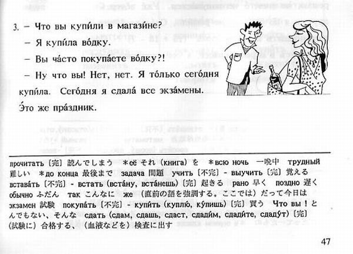
... Knowing English grammar is not enough when your vocabulary is not large enough
So the solution is the RS LANG APP with access to English basic words vocabulary , in total 3600 words in 6 difficulty categories, it includes two games to make words learning funny and ability to track your progress.
The Team
Tatiana Klimova
Made a sword fight show at a Biker club birthday party.

Wroclaw
Weranika Lapanava
PhD, Taught students in the University for 7 years, but it didn't help.
Sergey Kornienko
Ex-pilot of Rebel Squadrons, Wookie (fly Star Wars Sim custom mission -> write fan-fic report about the battle).
App features
- Vocabulary, 3600 words in 6 difficulty categories
- russian translation
- transcription
- explanation of usgage
- phrase example
- associative picture
- audio clips for pronunciation training
- Games for words learning
- Audiocall - to train audition
- Sprint - to train quick translation recall
- User Authentification. Registered user is able:
- to track words learning process - new words, learned words, correct answers perventage etc
- to mark words as "learned" to exclude it from games
- to mark words as "complicated" to add to custom Vocabulary section
App Screenshots/demo
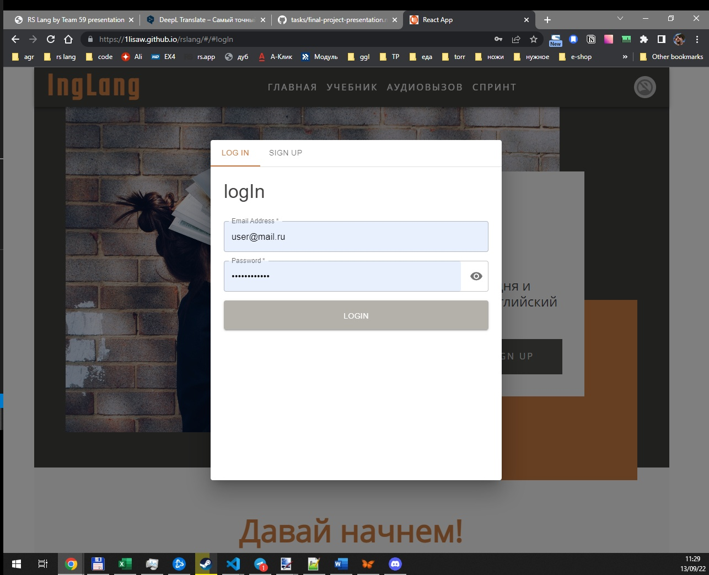
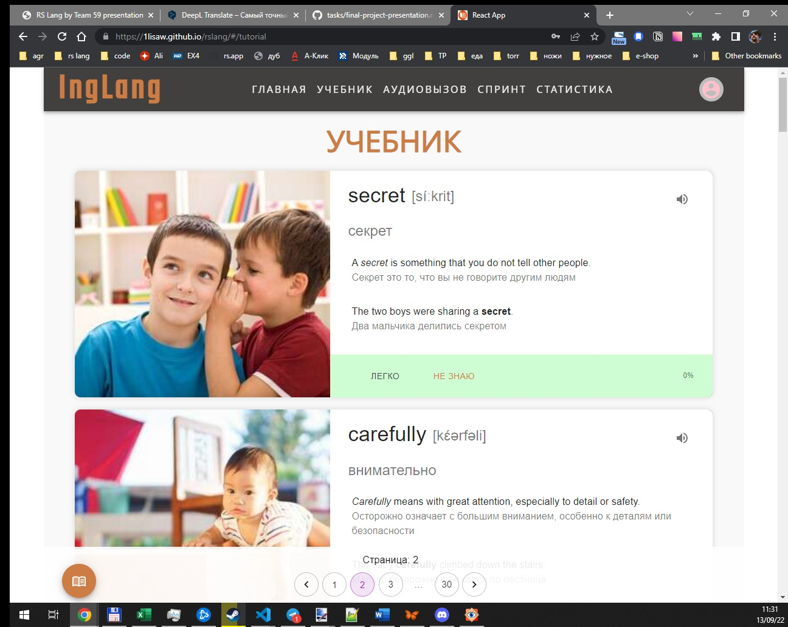
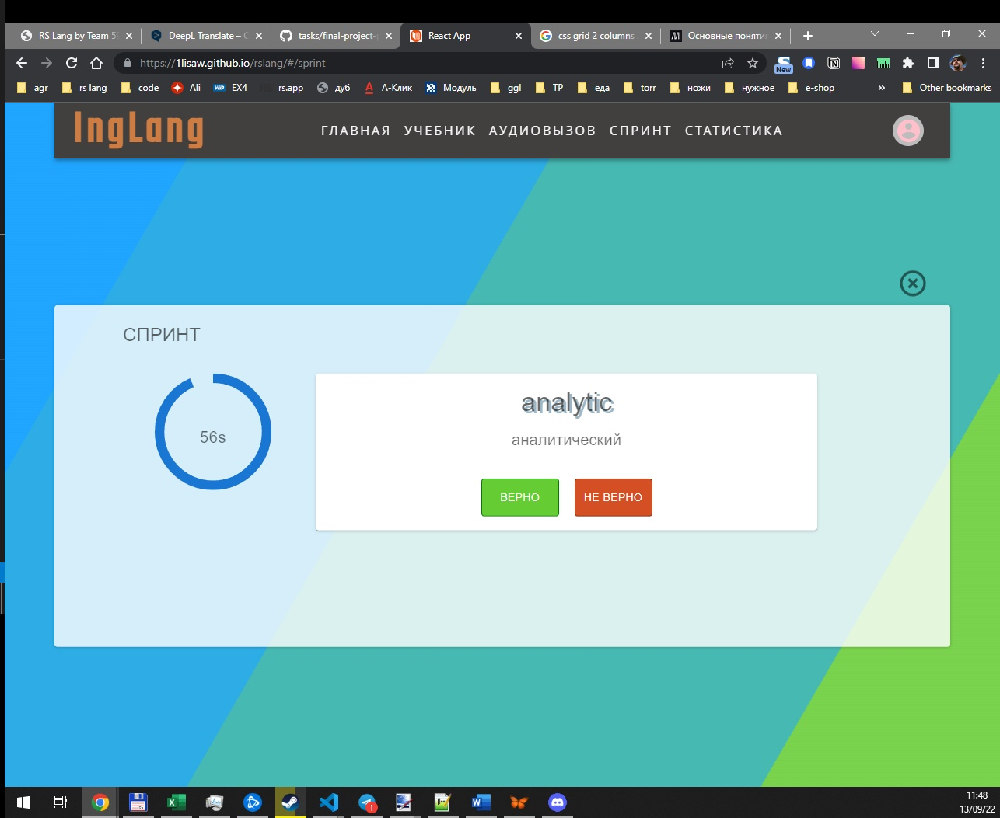
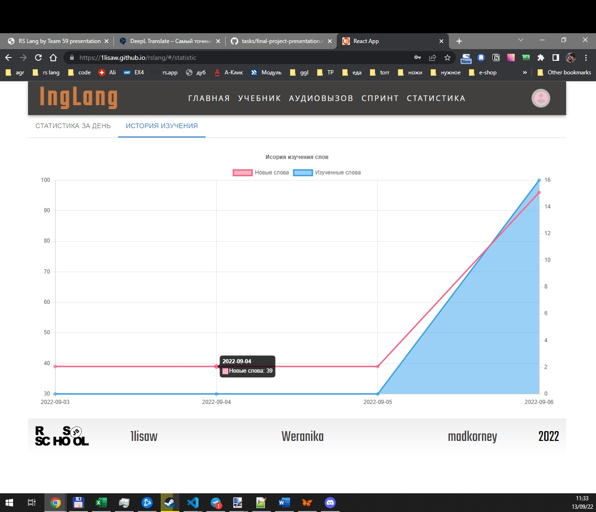
Extra features
- Ability to add a word to "complicated" from the game
- Ability to check short term progress for previous dates
- Long term statistics on charts
Our Workflow - Contributions
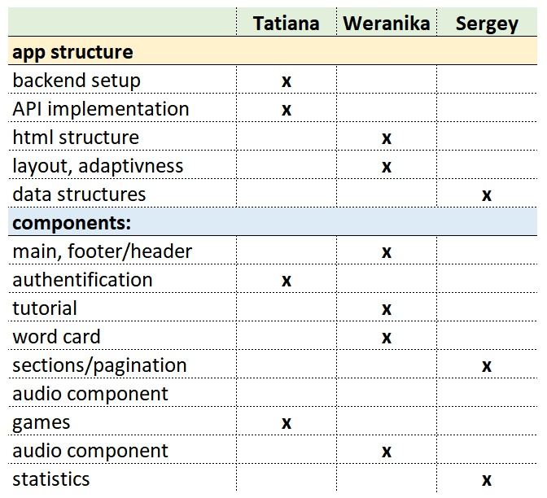
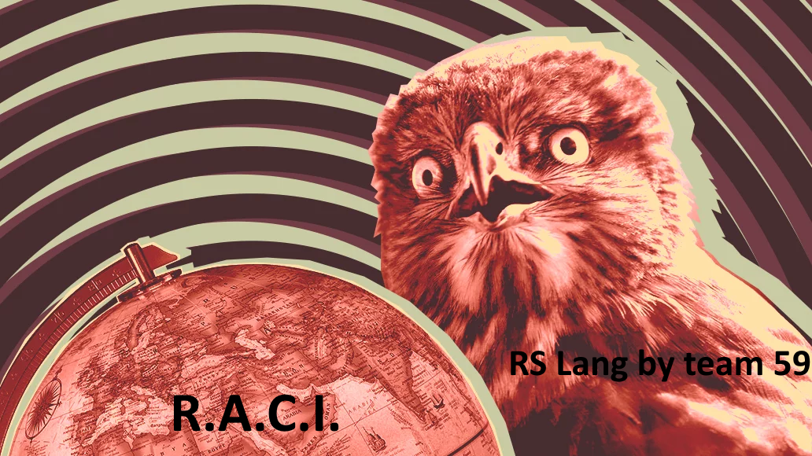
Our Workflow - Comms and Tools
- Trello - task planning and tracking
- Discord - communications
- Miro - drafts, mockups
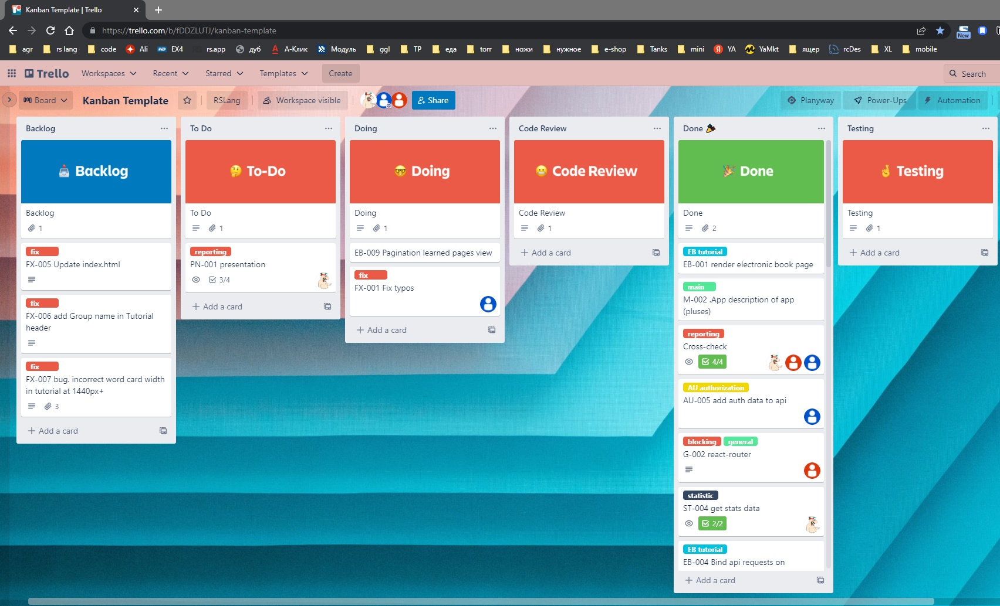
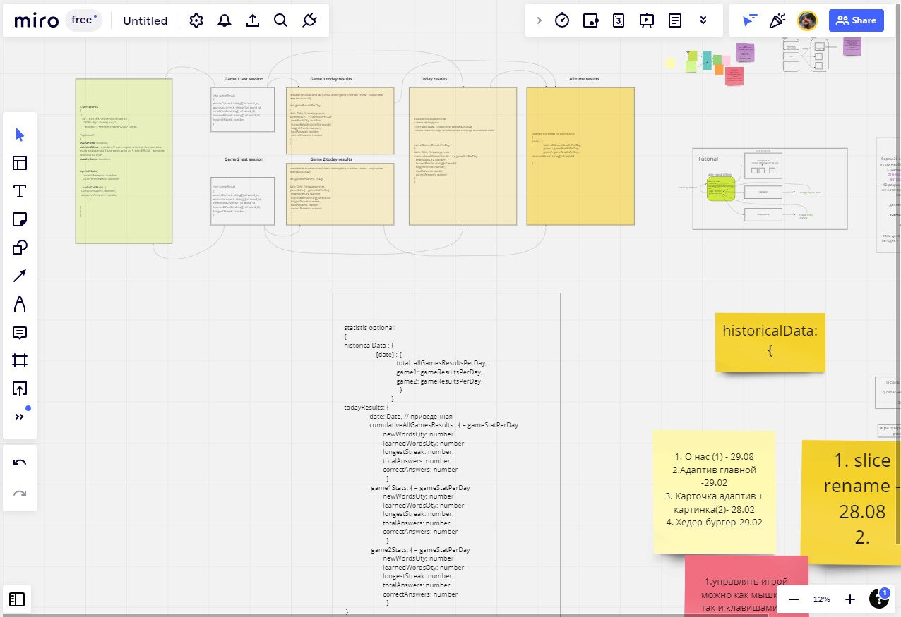
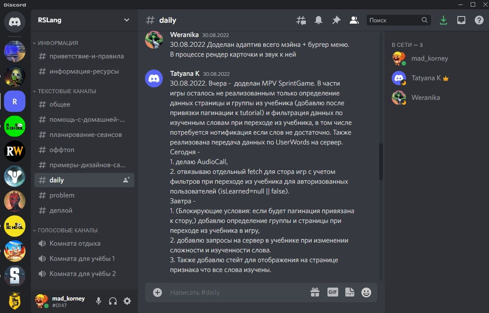
Tech Stack
- Main stack
- Typescript
- React
- Redux, Redux Toolkit
- Material UI
- Additional Libraries
- ZOD - for user input validation
- Chart.js - charts for statistics
- Tools
- Create-React-App - for initial app setup
- Eslint, prettier - for clean code
- API test tools - Swagger, Postman
- Auto deploy to gh-pages
PRs and Commits
- Development in branches
- PR > code review > merge into "Development"
- Weekly merge into protected "Stage"
- Auto deploy from "Stage" to gh-pages
- total statistics
- 48 PR
- 237 commits
Encountered problems
- Router issue at build
- Audio component complication
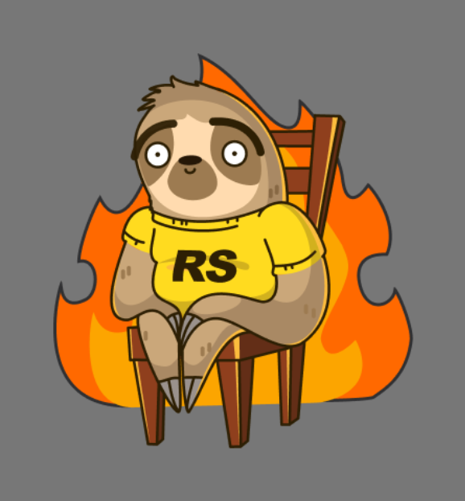
Resume
- We've built extremely useful application to help people to learn Englsih
- We've learned a lot about teamwork and collaboration and about using React/Redux (and many more interesting things)
- It's a great app to show in the portfolio when we'll be looking for a job.
- Weranika is the best candidate for Polish EPAM!